IN PRODUCTION
いま、本番で動いているもの。
合同会社Shistoは、中小企業の仕事をAIで自動化しています。ここに並ぶ28本は、からまでの半年で作り、いまも動いているものです。企画から設計、開発、運用まで、すべて一人で行っています。
作るときに決めているのは、AIに任せないところです。個人情報や社外に出せないものは端末の中だけで扱い、外部のAIには送りません。報告に載る数字はAIに書かせず、そのつど元のデータを数え直します。送信するか、確定するかは、必ず人が決めます。
6 か月で 28 本
27 本が本番稼働・1 本が試験運用
設計から運用まで 1 人
NO.相手作ったもの稼働開始
取引先に納めたもの01—11社外のために作り、運用まで引き受けているもの
013社領収書のLINE取り込み2026-06
01
領収書のLINE取り込み
3社で稼働中
- 課題
- 領収書を溜めておき、月末にまとめて台紙に貼り、日付と店名と金額を1件ずつ入力していた。
- 作ったもの
- 受け取った人が、その場で写真を会社の公式LINEに送るだけ。画像は各社のクラウドに保存され、日付・店名・金額が経費精算シートに転記されます。飲食店の領収書だけ、会議費か接待費かを尋ねるボタンがLINEに届きます。この案件が受け持つのは「写真を受け取ってクラウドに置くまで」で、読み取って台帳に書く本体は12です。
- 工夫
- ボタンが押された時点でファイル名から行を特定し、店名と金額が一致するときだけ書きます。一致しなければ止まります。
- いま
- 3社で動いていて、これまでに100件以上の領収書を取り込みました。
Google Apps Script ／ LINE Messaging API ／ Google Drive ／ Google スプレッドシート
02食品卸見積書・請求書の自動発行2026-05
02
見積書・請求書の自動発行
食品卸
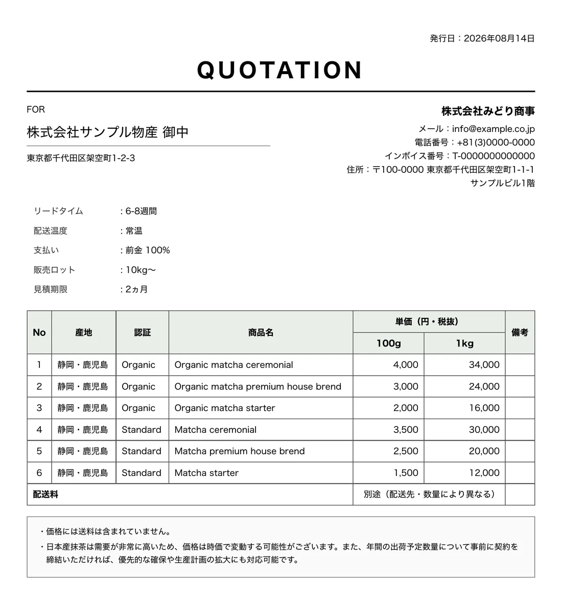
ツールが出力した見積書PDF（デモ用の架空データ）
- 課題
- 見積書と請求書を、毎回もとのファイルを複製して手で書き換えていた。
- 作ったもの
- ブラウザで入力1枚を埋めると、その会社の書式どおりのPDFが出ます。フォント・日付の書き方・レイアウトまで、それまで使っていた書類に合わせ込みました。スマートフォンからも発行できます。
- いま
- 本番で運用中です。
Streamlit ／ WeasyPrint ／ Google Sheets API ／ GitHub Actions
03食品輸出商社海外営業のAI基盤2026-06
03
海外営業のAI基盤
食品輸出商社
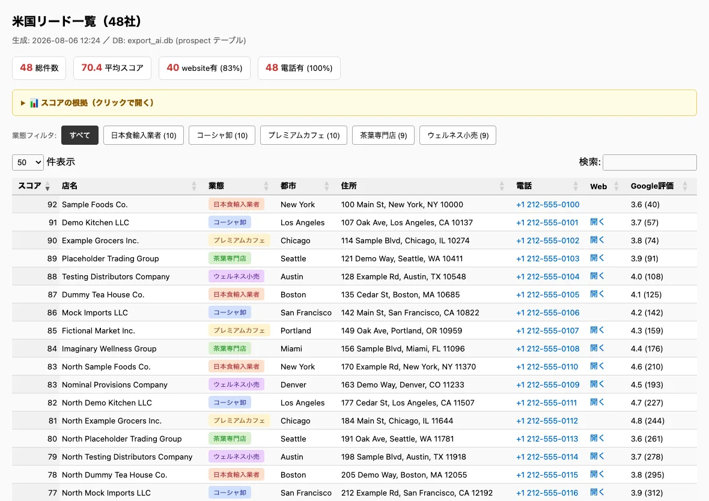
集めた見込み先の一覧画面（デモ用の架空データ）
- 課題
- 海外の取引先を探すところから商談の準備まで、すべて人手で回していた。
- 作ったもの
- 見込み先を集めるところから商談の準備までを一本の流れにまとめ、進み具合をLINEで受け取れるようにしました。
- いま
- クラウド上で本番稼働しています。50都市から20,000件を超える見込み先を集めました。
Python ／ Render ／ Supabase / PostgreSQL ／ Gemini API ／ LINE Messaging API
04バスケットボールクラブ子供スポーツチームのLINE運営2026-07
04
子供スポーツチームのLINE運営
バスケットボールクラブ
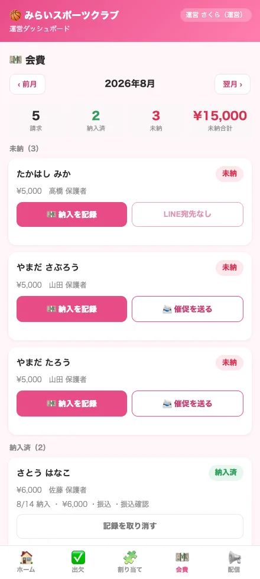
運営が見る会費の画面（デモ用の架空データ）
- 課題
- 保護者への連絡、会費の管理、入会の受け付けがそれぞれ別の場所にあり、担当者の手作業でつないでいた。
- 作ったもの
- 保護者がふだん使っているLINEだけで完結する形にしました。子供の情報を扱うため、データベース側で行ごとにアクセスを制限し、他の家庭の情報が見えない作りにしています。
- いま
- クラブで試験運用中です。290人を超える保護者・関係者が登録しています。
Python / FastAPI ／ Supabase（行レベル制御）／ LINE Messaging API ／ Render
05バスケットボールクラブ交通費精算のLINE Bot2026-05
05
交通費精算のLINE Bot
バスケットボールクラブ
- 課題
- 選手が紙やメッセージで交通費を申告し、担当者が毎月まとめて集計していた。
- 作ったもの
- LINEの会話形式で、区間・高速代・手当を入力できるようにしました。入力されたものは月ごとに自動で集計されます。無料の範囲内で運用できるよう、送信の通数まで設計に織り込みました。
- いま
- 稼働中です。作った本人も、選手として毎月使っています。
Google Apps Script ／ Google スプレッドシート ／ LINE Messaging API
06自社自作の会計ソフト2026-07
06
自作の会計ソフト
自社
ふつうの言葉で1件入れると仕訳になり、確定すると試算表の貸借が合う（デモ用の架空データ）
- 課題
- 市販の会計ソフトに合わせると、帳簿の付け方がソフトの都合に縛られる。
- 作ったもの
- 複式簿記の仕訳をただ一つの正しい形と定め、いったん確定した仕訳は書き換えられず、反対の仕訳を立てることでしか直せない設計にしました。外部のライブラリを使わず、標準の機能だけで書いています。
- いま
- 端末の中で動いており、領収書の転記とつないで使っています。これまでに120件を超える仕訳を記帳しました。
Python（標準ライブラリのみ）／ SQLite
07食品輸出商社企業向けLinkedIn投稿の支援Bot2026-04
07
企業向けLinkedIn投稿の支援Bot
食品輸出商社
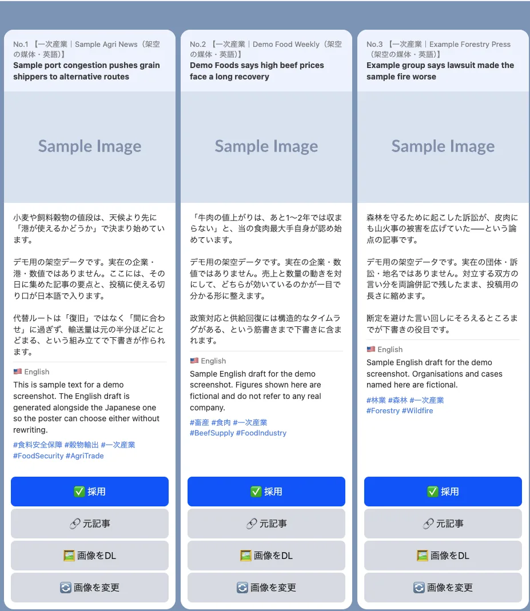
LINEに届く投稿案（デモ用の架空データ）
- 課題
- 企業アカウントの投稿は、書く人・確認する人・出す人が分かれていて、そのたびに社内で回覧していた。
- 作ったもの
- 毎朝、海外の記事から日本語と英語の投稿案を作ってLINEに届けます。「採用」を押すと、そのまま貼れる形の投稿文と画像が返ります。出すかどうかは担当者が決めます。画像は候補から選び直せます。
- いま
- 稼働中です。
Python ／ LINE Messaging API ／ Google Apps Script
08食品卸海外向けの英語コーポレートサイト2026-07
08
海外向けの英語コーポレートサイト
食品卸
- 課題
- 海外の取引先に商品や認証の状況を説明する場が無く、そのつどメールに資料を添えて送っていた。
- 作ったもの
- 英語のサイトを作り、独自ドメインで公開しました。商品の紹介・専門的な解説記事・プライバシーポリシー・利用規約の4ページ構成です。問い合わせフォームも自前で作り、送信された内容がそのまま担当者のメールに届きます（外部サービスへの登録は不要です）。
- いま
- 公開中です。
HTML / CSS / JavaScript ／ Cloudflare Pages ／ Google Apps Script
09スポーツ関連企業打ち合わせ記録の自動登録2026-07
09
打ち合わせ記録の自動登録
スポーツ関連企業
- 課題
- 打ち合わせのたびに、いつ誰と何を話したかを社内の業務システムへ手で登録していた。件数が増えるほど後回しになり、履歴が虫食いになる。
- 作ったもの
- カレンダーの予定からその日の打ち合わせを拾い、相手先を判定して社内システムの活動履歴に自動で登録します。判定は決まった突き合わせで行い、予定の中身を外部のAIには一切送りません。毎週の定例のような繰り返しの予定でも、日程が変わったときに二重登録にならないようにしています。
- いま
- 毎日自動で動いています。
Google Apps Script ／ カレンダー API ／ 業務システムの REST API
10スポーツ関連企業担当者用の業務ツール2026-06
10
担当者用の業務ツール
スポーツ関連企業
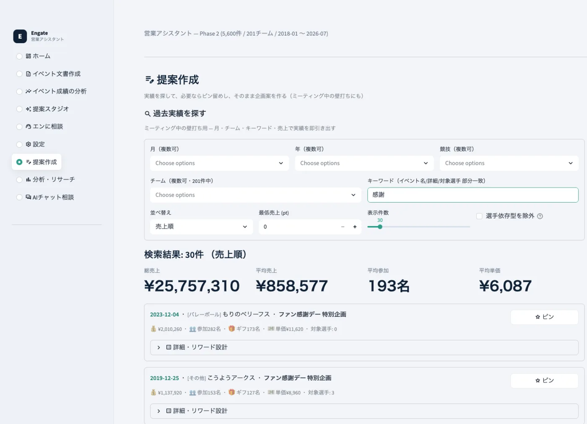
過去の実施記録を検索する画面（デモ用の架空データ）
- 課題
- 担当する各チームの実績・企画・年間計画が別々のファイルに散らばり、「前に似た企画はあったか」を探すだけで毎回時間がかかっていた。
- 作ったもの
- 過去の実施記録5,600件超を検索し、企画の文書を作り、実施後の成績を分析するまでを1つの画面にまとめました。報告に載る数字はAIに書かせず、そのつど元データを数え直して出します（件数を書き写す運用をやめました）。
- いま
- 認証をかけて本番で使っています。200チーム・5,600件を超えるイベント記録を扱っています。
Python ／ Streamlit ／ SQLite
11スポーツ関連企業SNS投稿案の自動生成2026-03
11
SNS投稿案の自動生成
スポーツ関連企業
- 課題
- 公式アカウントの投稿は、まずネタを探すところに時間がかかる。担当者が忙しい週はそのまま止まってしまう。
- 作ったもの
- 毎朝4時に、ニュース・検索トレンド・海外の掲示板から400件以上を自動で集め、投稿する価値が高いものを8件選んで、本文とハッシュタグまで作ってスプレッドシートに並べます。同じ分野に偏らないよう、1分野は最大3件までにしています。
- いま
- 毎朝自動で動いています。
Python ／ launchd ／ Google スプレッドシート API
自社の業務を回しているもの12—20会社の経理・営業・記録を、この仕組みで回しています
12自社領収書の自動転記2026-04
12
領収書の自動転記
自社
- 課題
- 写真が集まっても、そこから日付・店名・金額を読み取って台帳に書くのは結局その都度の手作業だった。
- 作ったもの
- 保存された領収書を読み取り、経理の台帳へ転記する本体です。01「領収書のLINE取り込み」から流れてきた画像を受け取って動きます。読み取りに自信が無い金額は、勝手に決めずに人へ回します。
- いま
- 毎朝自動で動いていて、自社分だけで97件を転記しました。
Python ／ Google Drive・スプレッドシート API
13自社営業書類のジェネレーター2026-07
13
営業書類のジェネレーター
自社
品目を選ぶと単価・金額・合計が自動で入る（表紙は生成される提案書／デモ用の架空データ）
- 課題
- 提案・見積・請求のたびに前回のファイルを複製し、宛名と金額を書き換えていた。書き換え漏れが怖い。
- 作ったもの
- 提案書・見積書・請求書を、決まった書式で半自動で作ります。PDFにしたときに文字が化けて検索・コピーできなくなる問題を、出力後に必ず検査して直すところまで組み込みました。02は取引先の書式に合わせ込んだ専用のもので、こちらは自社用に、提案書まで含めて作り直したものです。
- いま
- 自社の書類はこれで出しています。取引先への請求書も、この仕組みで発行しました。
Python ／ Cloudflare Pages ／ Playwright
14自社取引先とのやりとりの記録2026-07
14
取引先とのやりとりの記録
自社
- 課題
- 「あの話はいつ、どちらから出たか」が、メモとメッセージとカレンダーに散らばっていた。
- 作ったもの
- 打ち合わせ・提案・納品・実装を1本の履歴にまとめます。定例の前には、その2週間に何をしたかが自動でまとまります。打ち合わせの音声は端末の中だけで文字にし、外部のサービスに送りません。
- いま
- 取引先ごとに毎回記録していて、いまは126件たまっています。
Python ／ 音声文字起こし（ローカル実行）
15自社全案件の台帳と進行管理2026-07
15
全案件の台帳と進行管理
自社
- 課題
- 案件が増えると、忘れているものほど思い出せない。止まっていること自体に気づけない。
- 作ったもの
- 毎晩すべての案件の状態を集計し直し、翌朝にLINEで報告します。止まっている案件と、期限が切れたものを自動で拾います。
- いま
- 毎晩・毎朝、自動で動いています。いまは58件の案件を追っています。
Python ／ launchd ／ LINE通知
16自社全社ダッシュボード2026-06
16
全社ダッシュボード
自社
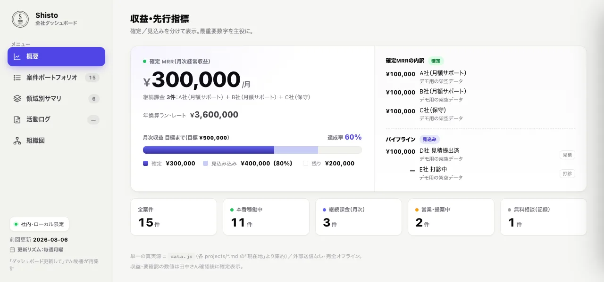
収益と案件の状況をまとめた画面（デモ用の架空データ）
- 課題
- 案件も収益も、見るたびに別のファイルを開いて足し算していた。全体がいくらなのか、すぐ答えられない。
- 作ったもの
- 案件と収益を1枚で見る画面です。外部のライブラリを一切使わず、標準の機能だけで作りました。
- いま
- 社内で使っています。
HTML / JavaScript（依存ライブラリなし）
17自社コーポレートサイト2026-04
17
コーポレートサイト
自社
現在のshisto.jpをサイトのコードで表示
- 課題
- 会社を説明する場所が無く、何をしているのかを毎回口頭で伝えていた。
- 作ったもの
- 自社サイトです。日本語フォントを、そのサイトで実際に使う文字だけに絞って配信し、フォントの重さを約3分の1にしました。新しい漢字が増えたら検知する仕組みも入れています。
- いま
- shisto.jp で公開中です。
HTML / CSS / JavaScript ／ GitHub Pages
18自社AI業界ニュースの分析基盤2026-04
18
AI業界ニュースの分析基盤
自社
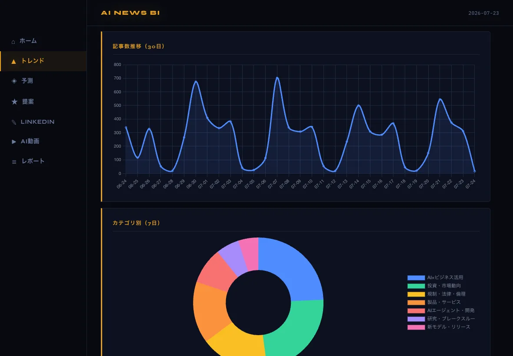
トレンドの画面（公開ニュースを集計した実データ）
- 課題
- 業界の動きを追うのに毎日ニュースを読み、しかも読んだそばから忘れていく。
- 作ったもの
- ニュースを毎日集め、件数の推移・分野の偏り・出どころの内訳をグラフで見られるようにしました。週次・月次でまとめて読み返せます。
- いま
- 集めた記事は累計28,000件を超えました。
Python ／ DuckDB ／ YouTube Data API
19自社調査のナレッジベース2026-06
19
調査のナレッジベース
自社
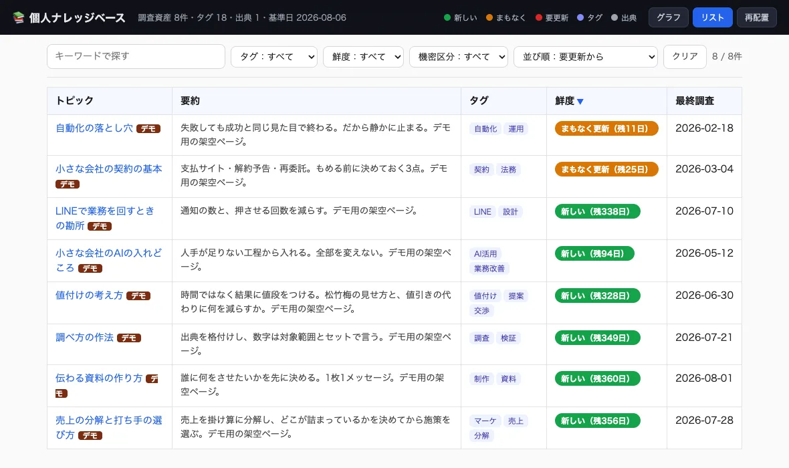
調査の一覧画面（デモ用の架空データ）
- 課題
- 時間をかけて調べても、半年後には同じことをもう一度調べていた。
- 作ったもの
- 調べたことを、あとから引ける形で溜める仕組みです。調査ごとに「いつまでなら信じてよいか」を持たせ、古くなったものに印を出します。
- いま
- 調査のたびに書き足していて、いまは82件あります。
Python ／ Markdown ／ 静的HTML生成
20自社文書を漫画にするツール2026-08
20
文書を漫画にするツール
自社
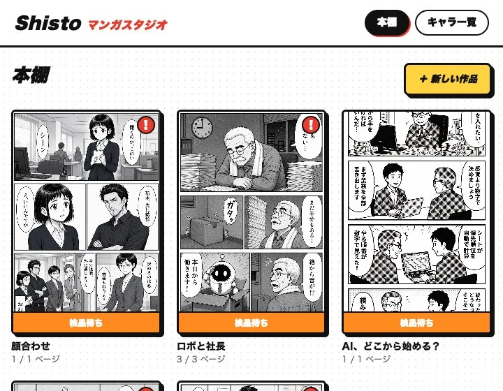
ツールの本棚画面（自社の作品）
- 課題
- 社内向けの説明文書は、書いても最後まで読まれない。長いものほど読まれない。
- 作ったもの
- 文書を短編漫画（3ページ前後）にします。描き上がった絵の中の文字を機械で読み取り、脚本と突き合わせて、違っていれば描き直します。人が確認するのは脚本の段階と仕上がりの2か所だけと決めてあります。
- いま
- 自社の資料で1本を仕上げました。社外の文書にはまだ使っていません。
Python ／ Flask ／ 画像生成AI ／ 文字読み取りによる照合
自分のために作ったもの21—28作りたいものを試した場。ここで確かめた作りを、上の2つに回しています
21自分用お店探しのBot2026-04
21
お店探しのBot
自分用
- 課題
- お店を探すたびに検索して口コミを読み比べ、結局決めきれずに時間だけ使っていた。
- 作ったもの
- LINEで場所・人数・予算などの条件を伝えると、条件に合うお店を提案します。やりとりはLINEの中だけで完結し、アプリを入れる必要がありません。
- いま
- 稼働中です。
Cloudflare Workers ／ Gemini API
22自分用写真カレンダー2026-05
22
写真カレンダー
自分用
- 課題
- 紙で配られる試合日程や練習予定を、1件ずつ手でカレンダーに入れ直していた。
- 作ったもの
- 予定表の写真をLINEに送ると、日付・時間・場所を読み取って、そのままスマートフォンのカレンダーに登録されます。
- いま
- 稼働中です。最初の試験では、12件の試合日程を一度に登録できました。
Cloudflare Workers ／ Gemini（画像読み取り）／ CalDAV
23自分用固定費・サブスクの管理2026-06
23
固定費・サブスクの管理
自分用
1件足すと今月の合計と内訳の円グラフがその場で変わる（デモ用の架空データ）
- 課題
- 少額の月額サービスが増え、毎月いくら出ているのかを把握できなくなっていた。
- 作ったもの
- 毎月の固定費を1画面で管理します。次の請求日と予算に対する使い方が分かります。データは端末の中だけに置き、外部に送りません。
- いま
- 毎月見ています。
Cloudflare Pages（PWA）
24自分用思想アーカイブ2026-07
24
思想アーカイブ
自分用
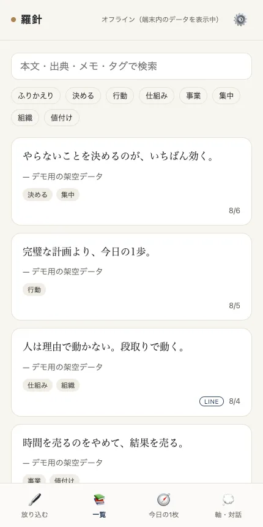
スマートフォンでの表示（デモ用の架空データ）
- 課題
- 心に残った言葉をその場でメモしても、二度と開かないまま埋もれていた。
- 作ったもの
- 気になった言葉をLINEからでも放り込めるようにし、毎日1枚だけ過去の言葉が手元に戻ってくるようにしました。読み返しながら自分の考えを書き足していきます。
- いま
- 毎日届いています。
Cloudflare Pages / D1 ／ Gemini API
25自分用メール秘書2026-07
25
メール秘書
自分用
返信が要るメールを開き、用件を1行書くと下書きができてGmailに保存される（デモ用の架空データ・下書き本文は見本）
- 課題
- 複数のメールアドレスを行き来しながら、返さなければならないものを探していた。
- 作ったもの
- 返信が必要なメールだけを集め、本人の書き方に寄せた下書きをメールソフトの下書きに保存します。送信する機能はあえて入れていません。出すかどうかは必ず人が決めます。
- いま
- 毎日使っています。
Cloudflare Pages / D1 ／ Google Apps Script
26自分用情報の目利きアーカイブ2026-07
26
情報の目利きアーカイブ
自分用
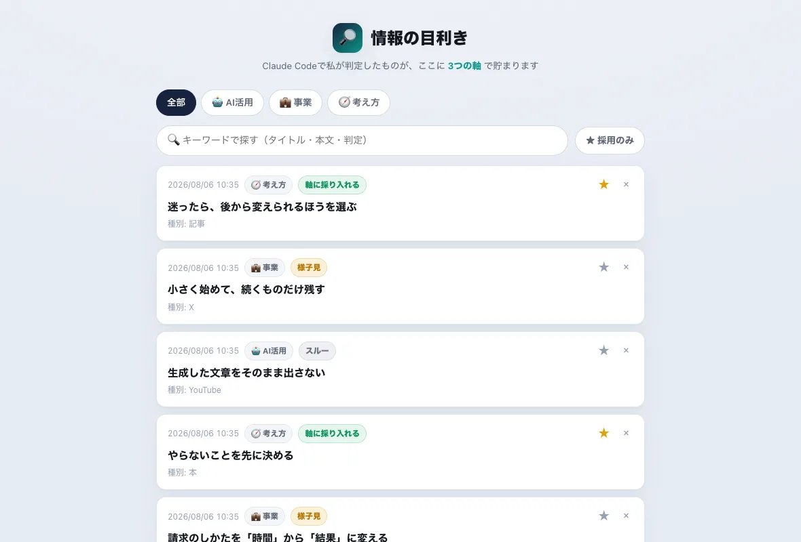
アーカイブの閲覧画面（デモ用の架空データ）
- 課題
- 良さそうな情報を見つけても、自分の事業に使えるかどうかを毎回ゼロから考えていた。
- 作ったもの
- 見つけた情報を「AIの使い方」「事業」「考え方」の3つの軸で判定し、採用・保留・見送りを付けて溜めます。あとから見返せます。
- いま
- 端末の中で動いています。
Python / Flask ／ SQLite
27自分用Xのいいねアーカイブ2026-07
27
Xのいいねアーカイブ
自分用
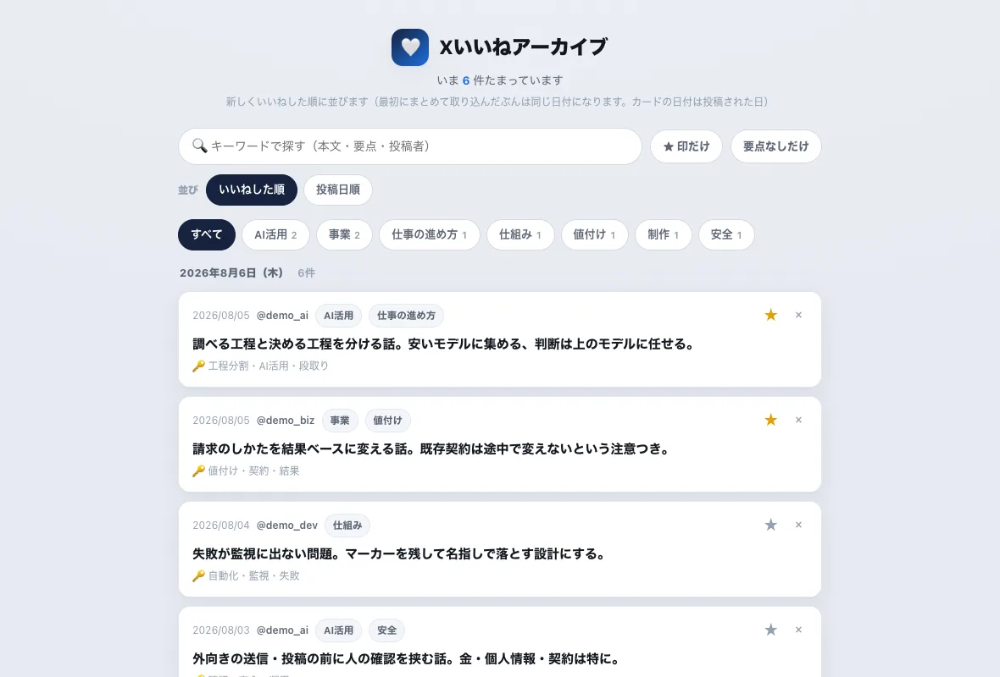
アーカイブの閲覧画面（デモ用の架空データ）
- 課題
- いいねした投稿は溜まる一方で、あとから探し出すことができなかった。
- 作ったもの
- いいねした投稿を公式のAPIだけを使って毎日集め、要点とタグを付けて検索できるようにしました。元の投稿が消されたら、こちらの控えも消えます。
- いま
- 毎日自動で集めています。
X API ／ SQLite
28自分用AI討論アプリ2026-06
28
AI討論アプリ
自分用
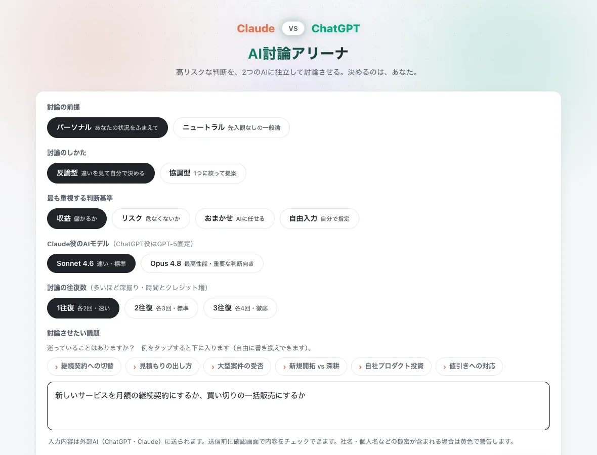
討論を始める前の入力画面（デモ用の架空データ）
- 課題
- 重い判断ほど相談相手がいない。1つのAIに聞くと、その答えに引きずられる。
- 作ったもの
- 2つの別々のAIに独立して討論させ、意見の違いをそのまま見せます。外部に送る前に、社名や個人名が混じっていないかを画面で確かめる関門を必ず通します。決めるのは自分です。
- いま
- 端末の中で動いています。
Python / FastAPI ／ launchd
NOTES
- 取引先の社名は、守秘のため業種のみを記載しています。
- 画面の写真と動画は、取引先の実際のデータが写らないものだけを載せています。出ている会社名・氏名・金額はすべて架空のものです。
- 動画は、本物のツールを実際に操作して録画したものです。再生の速さは変えていません。
- 設計だけのもの、開発中のものはこの一覧に含めていません。
- 「稼働開始」の月と、本文に出てくる件数は、開発の記録と実際のデータを数えたものです。数えられないものは書いていません。